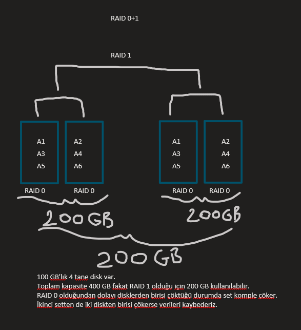

2 farklı fiziksel diske ihtiyaç vardır.
1.diske ne yazılırsa 2.diske de aynı veriler birebir yazılır fakat bu Backup değildir.
Mirror yaptığımız 2 tane 100'er GB'lık Hard Disk'imiz olsun. Toplamda 1 tanesinden alınan maksimum kapasite kadar veri kaydedilebilir.
Disklerden biri bozulduğu zaman Mirror'lanmış olduğu için makine çalışan diğer diskten Boot olur ve sorunsuz çalışır.
Mirroring, RAID'lerin 2.'nin sadece okuma süresi ve 3.hedefi gerçekleştirir. Fakat 1. hedef sağlanamaz, aksine elimizde ne kadar var ise yarısını hata töleransı sağlayabilmek için işgal eder. Fakat Volume'ün silinmesi durumunda, Drive Letter da silineceği için veriler uçar.
Okuma süresi Mirror'un yapısı gereği kısalır. Çünkü bir veri okunmak istendiğinde önce 1. ve 2. disklerden aynı anda okunabilir. Doğal olarak "A" verisi 1. diskten, "B" verisi 2. diskten okunduğu için okuma süresi yarı yarına kısalır.
RAID 1'ın kullanılma amacı hata töleransı sağlamaktır.
RAID 1'de, bir disk Remove olduğunda nasıl tamir edilir? Arızalı görünen(missing) diske > Right Click > Reactive Disk yapılır.
Fiziksel arızalı değilse bu işlemden sonra düzelebilir. Fiziksel arıza var ise bu durumda başta bekleyen diskleri devreye alırız. Bu durumda arızalı diske Remove Mirror yapılır. Volume kalır, Volume'ün Simple Volume'e dönüştürülmesini sağlar. Bu noktadan sonra Simple Disk'i(Yeni diskten elde ettiğimiz) > Right Click > Add > Disk 1 -> Tekrar senkronize etmeye bağlar. Maksimum iki disk Mirror edilebilir.
Break Mirror, iki diskin de senkronizasyonunu ortadan kaldırır, ikik diskin içinde de aynı veriler hala vardır. Bundan sonra birbirlerine ayrı ayrı veriler yazılır.
Break Mirror yaptıktan sonra artık eskiden Mirror olduğu Volume'le tekrar Mirror Volume yapamıyor. Bunun sebebi Break edilen diskin dolu olmasıdır. Bir diskin Mirror edilebilmesi için o diskin boş olması gerekir.
Hardware RAID yaparsak Mirroring ikiden fazla yapılabilir.
Minimum 3 farklı fiziksel disk ile yapılır.
Parity adında bir veri elde edilir. Bu üretilen bir veridir. Üçüncü disk toplam elde edilen hafızaya dahil edilmez. Bu disk Parity verisi için kullanılır.
RAID 5, RAID kurallarının tümünü karşılar.
Örneğin, 10 tane 100 GB disk var ise, toplam hafıza 900 GB olur.
Parity sayesinde disklerden biri çöktüğünde veri kaybı olmaz. Birden fazla disk(3 tane olma durumunda) var ise birden fazlası çöktüğünde yine veri kaybederiz. RAID 5 için 3'ten fazla da olsa sadece maksimum bir tane çöktüğü zaman çalışmaya devam edebilir. Yani 32 tane diskimiz bile varsa ve bunları RAID 5'e dahil ettiysek, bu durumda yine sadece 1 tane hata töleransı olur.
Peki Parity 1 disk bozulduğunda kayıp verileri nasıl geri getirir?
Senaryomuzda 3 tane disk olsun;
D1 D2 D3(P)
1 1 0
0 0 0
1 0 1
0 1 1
Parity disk 3.disk olmak zorunda değildir. Herhangi birisi olabilir.
Yukarıda D1'in çöktüğünü varsayalım. Yeni disk olarak da D4'ü ekleyelim.
D4 D2 D3
1 0 -> D2 1 ve D3 0 ise bu durumda D4 1 olmak durumundadır.
Bu mantıkla yeni diske verileri geri yazar.
Disklerden birisi arızalandığında verilere hala erişilebilir fakat hata töleransı ortadan kalkar.
Önce > Disk -> Arızalı > Right Click > Reactive Disk -> Düzelmezse, yeni bir fiziksel disk eklenir. Arızalı olan diskin üzerinde > Repair Volume seçilir.
Yeni taktığımız diski seçip, gerekli senkronizasyonu yapar ve tekrar hata töleransına sahip olur. Fakat aynı anda birden fazla disk çökerse veriler uçar.
RAID'ler Extend edilemezler fakat diskte boş kalan Volume'lere farklı türde RAID'ler atanabilir.(Aynı Disk üzerinde)
Minimum 4 disk ile yapılır.
Eğer Parity için 2 disk ayrılıyorsa, bu RAID 6 olur. Sadece hata töleransı artar.
Hata töleransı en yüksek RAID'lerdne biridir.
RAID 1+0 olaraka isimlendirilir. İki farklı RAID teknolojisinin birleşimidir. Önce RAID 1 yapılacak sonra özdeş setlerei birbirlerine Mirror'layacak.
Mantık olarak iki diski Mirror'layıp oluşan setin aynısından bir tane daha üretip o set ile Mirror'lıyoruz. Bu setler arasındaki teknoloji de RAID 0'dır.
Tersi olarak da RAID 01 yapabiliriz;

RAID 01 için;
1)Kapasite 1 diske göre artar, satın aldığımız toplam kapasiteye göre azalır.
2)Hız artmaz.
3)Hata töleransı artar.
RAID 15 için;
1)Toplam 600 GB'lık kapasitenin 200 GB'ını kullanabiliriz.
2)Hızı RAID 5 kadar olur.
3)Hata töleransı 1 set + 2.setin ilk diskine kadardır.
Tüm RAID'ler için hata töleransından kastımız disklerin sıralı olarak bozulma şeklinde hesaplıyoruz.
Server Manager > File and Storage Services > Disks -> Diskler görünmezse Rescan yaparız, olmazsa makineyi Restart'larız. Eğer Restart'tan sonra da gelmezse Management > Basic Convert > Hala görünmüyorsa içerisine Basic'teyken bir Partion oluştur. > Storage Pools > New Storage Pool(isim ver) > LUN'ları doğru seç[+](Sıralı değildir) > Create Virtual Disk when this wizard closes[+] -> Burada yeni bir Pool oluşturuyoruz, çünkü artık bu disklere Pool adıveriliir. -> 3 tanesini > RAID5-Pool1'e aldık.
OK >
> Virtual Disk Name(RAID5-1)
> Parity
> Fixed(Sanal makinede evde denerken thin yap)
> 300 GB -> 300 GB'lık bir RAID5 oluşturur.
Yeni bir Basic Disk oluşturuldu.
Diğer Set için aynı işlemi yekrar yaparız.
Bu Pool için de yeni disk oluşur.
İlk oluşan Disk > Right Click > New Mirroring Volume > İkinci oluşturulan disk > 1024(örneğin) > Volume Label RAID51
Bu noktadan sonra istersek bu Pool'lardan farklı RAID'ler üretebiliriz.